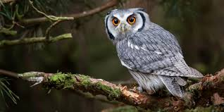

En esta página encontraremos las palabras más comunes para la letra B
1. Baile: Un acto o movimiento de un cuerpo con fines recreativos o artísticos.
2. Bebé: Un niño muy pequeño o recién nacido.
3. Biblioteca: Un lugar donde se guardan libros para que las personas puedan leerlos o tomarlos prestados.
4. Bosque: Una gran área cubierta de árboles y plantas.
5. Búho: Un ave nocturna con grandes ojos y un característico "cu-cu".
